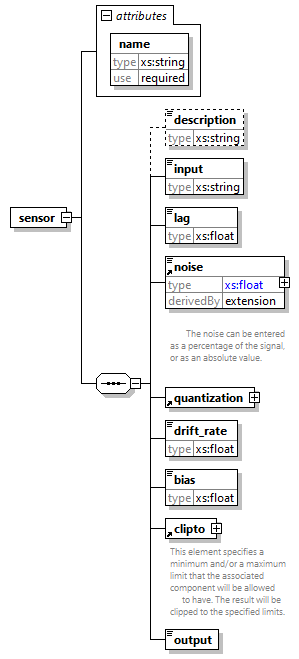

| diagram |
 |
| properties |
|
| children |
description input lag noise quantization drift_rate bias clipto output |
| used by |
|
| attributes |
| Name | Type | Use | Default | Fixed | Annotation | | name | xs:string | required | | | |
|
| source |
<xs:element name="sensor">
<xs:complexType>
<xs:sequence>
<xs:element name="description" type="xs:string" minOccurs="0"/>
<xs:element name="input" type="xs:string" maxOccurs="1"/>
<xs:element name="lag" type="xs:float" maxOccurs="1"/>
<xs:element ref="noise" maxOccurs="1"/>
<xs:element ref="quantization" maxOccurs="1"/>
<xs:element name="drift_rate" type="xs:float" maxOccurs="1"/>
<xs:element name="bias" type="xs:float" maxOccurs="1"/>
<xs:element ref="clipto" maxOccurs="1"/>
<xs:element name="output" maxOccurs="1"/>
</xs:sequence>
<xs:attribute name="name" type="xs:string" use="required"/>
</xs:complexType>
</xs:element> |